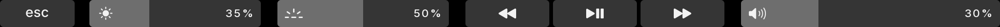
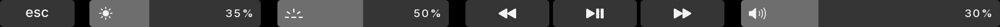
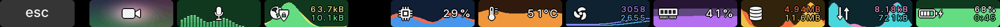
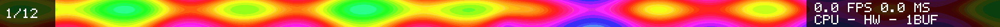

The keys you had
Esc, F1–F12 on fn, media keys. Nothing lost from T1Bridge's own bar.
For 2016–2017 MacBook Pros running Linux
fnstrip is a Touch Bar renderer for T1 MacBook Pros on T1Bridge. It keeps Esc, the F-keys, brightness, volume and media, and adds buttons that run your own commands, live meters, and the camera and mic, right on the strip.
Slide here to look along the whole strip
Best on a computer screen (or, of course, the laptop with the Touch Bar): the real bar is 36 times wider than it is tall.
· Drawn live in your browser with the renderer's own icons. The meters show sample data here (the battery is real where your browser shares it). Camera and mic stay in this tab.
Recorded from the renderer's own drawing code, at the bar's own shape.



startup_animation = "off" turns it off.
debug_gestures = "on":
full-colour animations with frame rate, render time and CPU, plus live audio spectra and the
camera. Quad-tap Fn steps through the themes.Esc, F1–F12 on fn, media keys. Nothing lost from T1Bridge's own bar.
Brightness, keyboard light and volume show their level and track your finger. Tap the icons to mute or turn the keyboard light off.
Any command, one tap away, lit while it's on: VPN, do-not-disturb, a dev server, a backup.
CPU, temperature, fans, memory, disk, network and battery, with their history already there when you look.
Play/pause lights up while something plays, with a live spectrum of what you're hearing.
See your camera's picture and your mic's sound on their buttons, so you know at a glance when they're live.
Default, mono, pastel or rainbow, across the whole bar, meters included. Any colour can be changed on top.
A bad config falls back to the default; if fnstrip stops, T1Bridge's own bar comes back.
Four themes, each across the whole bar: buttons, sliders, meters and spectra. Drawn here by the same code as the bar above; click one to try it up there.
One line picks a theme. Mono is greys all the way across, camera included; pastel and rainbow give every button its own colour, and its meter follows it.
A [colors] section changes any single colour on top: your own "on" colour, a different background, your team's colours.
Colours: background, plate, pressed, label, dim, lit, lit_pressed, fill, muted.
theme = "mono"
[colors]
lit = "#c0392b" # "on" buttons in red
label = "#f5e6c8" # warm white labels
The builder is made for the computer with the Touch Bar: pick your buttons there,
download the config, and drop it straight into ~/.config/fnstrip/. On a
phone it's cramped, and the file would land on the wrong machine anyway.
Best done on the laptop with the Touch Bar: build your row here, download the config, and drop it into place.
T1Bridge's own bar covers the keys, sliders and media, but it can't run your
commands: its desktop-provider contract has no action for that. fnstrip can. Pick the
buttons for your extras row below, then drag them along your row (or use
‹ ›) to put them in order. Toggles fill in from the left after Esc and
meters from the right end, as on the bar. Your row goes live on the
bar above (double-tap fn), and the config is ready to copy or download: save it as
~/.config/fnstrip/config.toml and restart the service.
A toggle is just an icon, a command to run when tapped, and an optional status command that lights it while it's on. So any toggle icon can drive anything you can run from a shell: do-not-disturb, keep-awake, night light, a backup, a dev server.
[[extras]]
icon = "mic" # any toggle icon
command = "makoctl mode -t do-not-disturb"
status = "makoctl mode | grep -q do-not-disturb"
Commands run with sh -c as you, so treat the file like a shell script.
For now the icons come from this set; the command can be anything. A broken config
falls back to the built-in default, and if fnstrip ever exits, T1Bridge's own bar
comes back.
Four steps, about five minutes once T1Bridge works. Nothing runs as root, and every step can be undone.
fnstrip draws the bar; T1Bridge talks to the hardware. Install it first and check its own bar shows up.
You also need Rust 1.88 or newer to build, and optionally brightnessctl (brightness sliders), PipeWire tools (mic and speaker spectra) and ffmpeg (camera).
Get the source, then, in it:
cargo build --release
install -Dm755 target/release/fnstrip ~/.local/bin/fnstrip
mkdir -p ~/.config/t1bridge
ln -sfn ~/.local/bin/fnstrip ~/.config/t1bridge/renderer
systemctl --user restart t1-touchbar.serviceThe link is T1Bridge's documented way to choose a renderer. fnstrip runs as you, as an ordinary process.
The volume slider, mute and media keys go through a T1Bridge desktop provider. If your desktop doesn't have one, use the small one that comes with fnstrip (it needs wpctl and busctl):
install -Dm755 contrib/desktop-provider/fnstrip-desktop-provider ~/.local/bin/
mkdir -p ~/.config/systemd/user/t1-touchbar.service.d
printf '[Service]\nEnvironment=T1BRIDGE_DESKTOP_PROVIDER=%%h/.local/bin/fnstrip-desktop-provider\n' \
> ~/.config/systemd/user/t1-touchbar.service.d/fnstrip-provider.conf
systemctl --user daemon-reload
systemctl --user restart t1-touchbar.serviceWithout a config you get the controls, the F-keys and an empty extras row. Build one with the builder above, or start from config/default.toml, which explains every setting. Save it as ~/.config/fnstrip/config.toml and restart the service.
rm ~/.config/t1bridge/renderer and
systemctl --user restart t1-touchbar.service.
If fnstrip ever fails to start or exits, T1Bridge falls back to its own bar by itself.
Everything on one page. The same details live in the README and in config/default.toml.
| Do this | And |
|---|---|
| Tap a button | It does its thing: a key, a media command, or your own command. |
| Drag on a slider | The level follows your finger, anywhere along the slider. |
| Tap the speaker icon | Mute and unmute. |
| Tap the keyboard icon | Backlight off, then back on to the level it had. |
| Hold fn | Esc and F1–F12 (or the controls, with default_row = "function"). |
| Double-tap fn | Your extras row. It stays until the next fn press. |
| Triple-tap fn and hold | The test screen: animations with frame rate, render time and CPU. With debug_gestures = "on". |
| Quad-tap fn | The next theme, until fnstrip restarts. With debug_gestures = "on". |
| Touch, or press fn, during the startup animation | Skips it. |
A small, strict subset of TOML at ~/.config/fnstrip/config.toml. Values are quoted strings. A mistake is reported with its line number in journalctl --user -u t1-touchbar.service, and the bar carries on with the built-in default.
| Setting | Values | What it does |
|---|---|---|
default_row | "controls", "function" | The row shown with fn up; the other one shows while fn is held. |
startup_animation | "on", "off" | The light show when the renderer starts. |
debug_gestures | "off", "on" | Lets the test screen (triple-tap fn and hold) and theme switching (quad-tap fn) through. Off by default. |
temperature_unit | "c", "f" | The temperature meter in °C (the default) or °F. |
theme | "default", "mono", "pastel", "rainbow" | The colours of the whole bar, meters included. |
[colors] | background, plate, pressed, label, dim, lit, lit_pressed, fill, muted = "#rrggbb" | Changes single colours of the theme. |
[[extras]] | up to 10 | One button of the extras row, with the keys below. |
icon | toggles: camera, mic, vpn; meters: cpu, mem, disk, net, battery, temp, fan | Toggles fill in from the left after Esc, meters from the right end. |
command | a shell command | Runs with sh -c when tapped (optional for meters). |
status | a shell command | Lights the button while it exits 0. Checked every second while the row shows, and after a tap. |
interface | e.g. "wg0" | For vpn and net: which network interface to graph. |
| You see | Try |
|---|---|
| T1Bridge's own bar, not fnstrip | Check the link (ls -l ~/.config/t1bridge/renderer) and the log: journalctl --user -u t1-touchbar.service -b. |
| Your buttons are missing | The config has a mistake: the log names the line. |
| Volume or media do nothing | Set up a desktop provider (install step 3). Media keys need a player that supports MPRIS, which most do. |
| No brightness sliders | Install brightnessctl. |
| The camera button stays dark | It shows the picture from the webcam service in contrib/t1-webcam. |
| Something else | Create $XDG_RUNTIME_DIR/fnstrip-record: fnstrip then logs events and keeps every frame, so you can replay what happened. |
The renderer only draws when something changes, and the meters read a few small files from /proc and /sys four times a second. They keep doing so in the background, so the extras row opens on full graphs, but only one plate's width of history is kept, in memory.
Whether music is playing comes from a single listener on the session bus that wakes only when a player changes state.
Measured on a 15″ 2016 MacBook Pro with the screen on.
| Bar showing | CPU, one core |
|---|---|
| Controls, nothing playing | about 2% |
| Music playing, spectrum on play/pause | about 4% |
Plus the desktop provider's once-a-second status check, which depends on the provider.
fnstrip runs as you: no root, no setuid. Besides the commands in your config, it starts only busctl, dbus-monitor, pw-record, ffmpeg, brightnessctl, systemctl and date, each without a shell.
The mic and speaker spectra and the camera picture run only while their button is lit (or music plays). They're analysed in memory and never saved or sent anywhere.
Touch ID stays entirely T1Bridge's: fnstrip only reads its state file to draw the prompt.
config.toml can run commands as you. Read any config you didn't write before using it,
including one from this page once you've changed it.
This page: no cookies, no analytics, no trackers, fonts served from here. The camera and mic demos stay in your browser tab.
MacBook Pros with a T1 chip and a Touch Bar: the 2016 and 2017 models (MacBookPro13,2, 13,3, 14,2 and 14,3), wherever T1Bridge runs. It's tested on a 15″ 2016 so far; reports from the others are welcome.
Those Touch Bars work differently. Use tiny-dfr, from the Asahi Linux project: it covers the T2 models and the Apple Silicon MacBook Pros with a Touch Bar (the 13″ M1 and M2; later Macs dropped it).
No. fnstrip replaces only the drawing part, through T1Bridge's documented renderer link. The hardware, the fingerprint sensor and its authentication stay T1Bridge's, and its own bar comes back the moment fnstrip stops.
Not on Linux: there's no system-wide way for apps to publish Touch Bar buttons, as there is on macOS. Instead, you choose the buttons, and each one can run any command, so it can drive any app that has a command line.
Not yet: the icons come from the set shown in the builder, but the commands behind them can be anything. Icons from files are an idea for later.
Barely: about 2% of one core with the screen on and nothing playing. See the numbers.
Remove the link and restart the service (above), and you're back on T1Bridge's bar. Then the reference and the log usually say why.
MIT licensed, free to use, change and share. The code, the icons it draws with, and the credits for everything it builds on are in the repository.
Built with AI, by a human. fnstrip was written with substantial help from Claude, an AI coding assistant, under the direction of its author, who decided what it should do and tried it out on a real 2016 MacBook Pro. Every change is checked by automated tests too. AI made the code quick to write; it doesn't make it perfect. Read it, question it, and report what's wrong.
Status: beta. Tested on one machine with T1Bridge v0.1.12. Expect rough edges, and tell us about them.
Not affiliated with or endorsed by Apple or the T1Bridge project. “Touch Bar” is a trademark of Apple Inc.